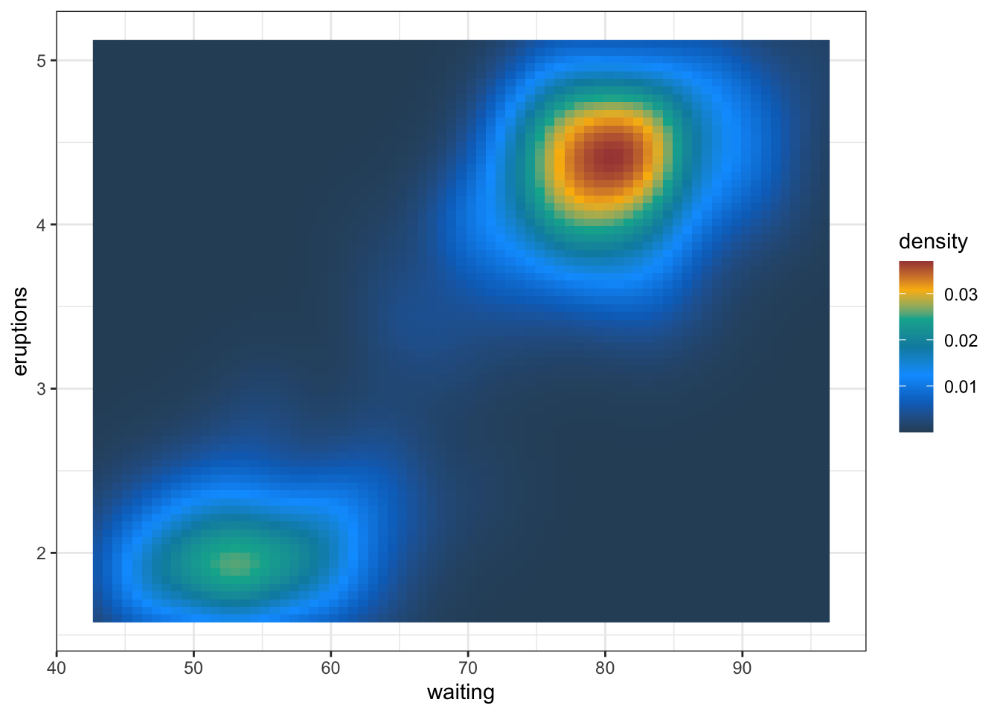
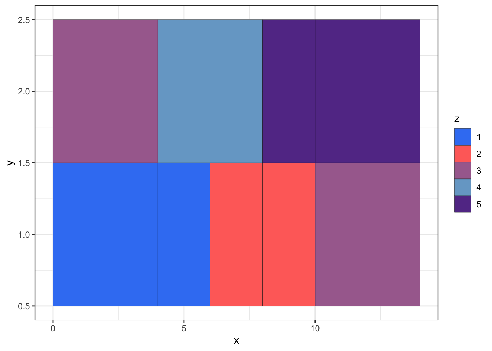
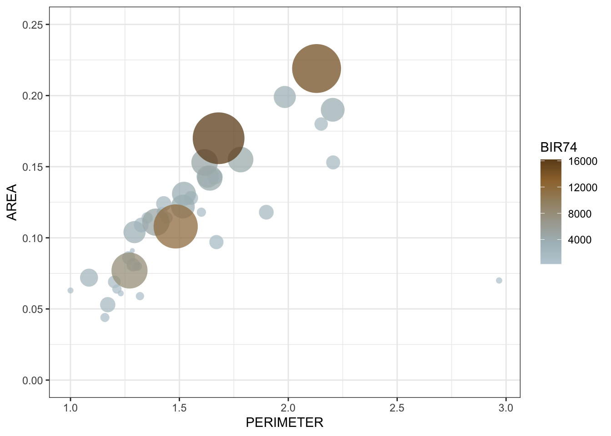
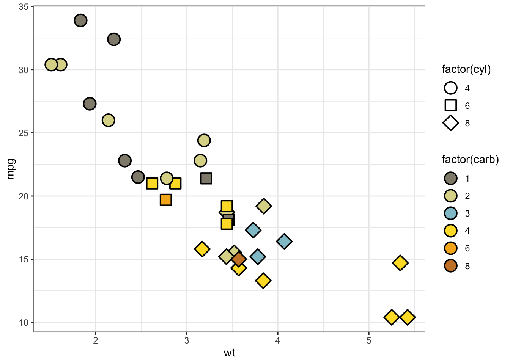
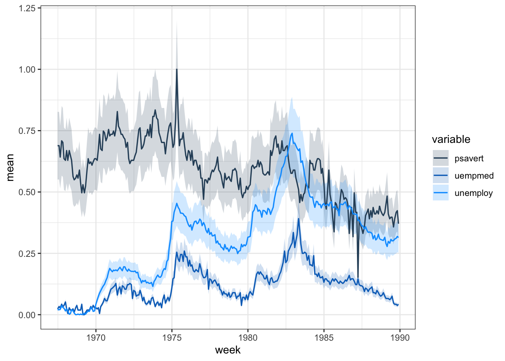
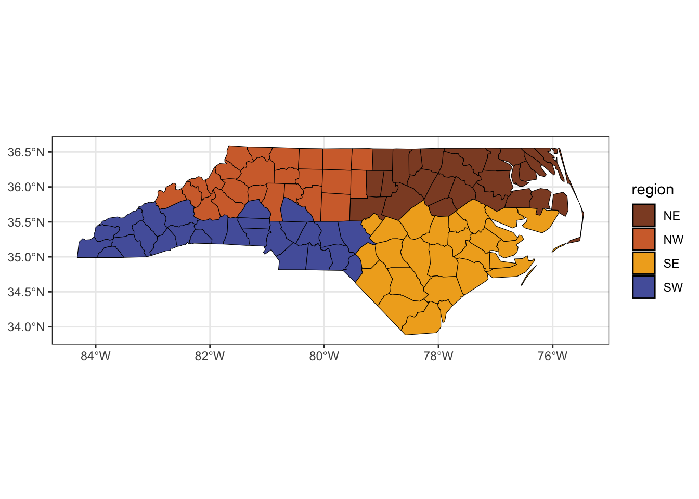
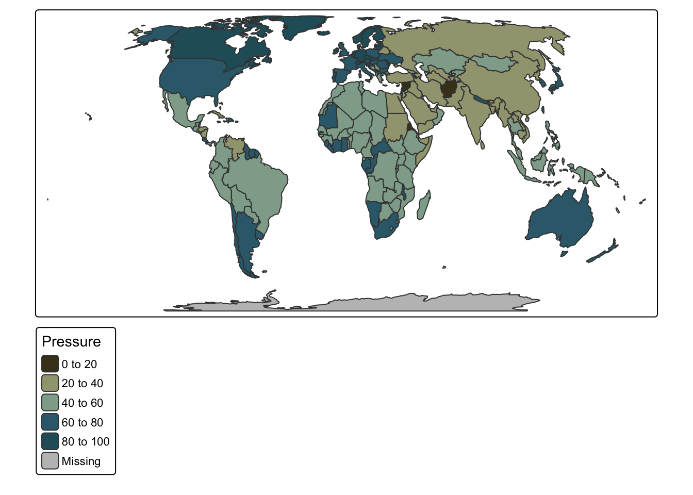
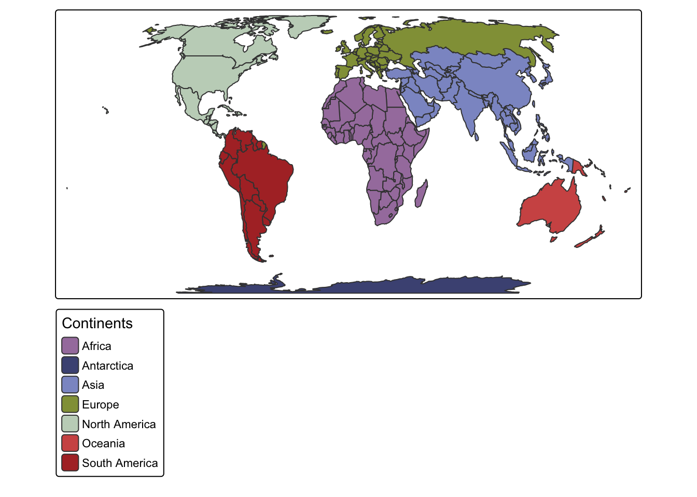

library(ggplot2)
library(tidyverse)
library(coralcolors)
ggplot() + theme_bw() +
geom_raster(data = faithfuld, aes(waiting, eruptions, fill = density)) +
scale_fill_coral(palette="acanthastrea", discrete=FALSE)
geom_raster()
geom_sf()
geom_tile()
df <- data.frame(
x = rep(c(2, 5, 7, 9, 12), 2),
y = rep(c(1, 2), each = 5),
z = factor(rep(1:5, each = 2)),
w = rep(diff(c(0, 4, 6, 8, 10, 14)), 2)
)
ggplot() + theme_bw() +
geom_tile(data = df, aes(x, y, width = w, fill = z), colour = "black") +
scale_fill_coral(palette="micromussa", discrete=TRUE)
geom_point()
library(sf)
nc <- st_read(system.file("shape/nc.shp", package="sf"), quiet = TRUE) |>
as.data.frame() |>
filter(CNTY_ID < 1950)
ggplot() + theme_bw() +
geom_point(
data = nc |> arrange(BIR74),
aes(PERIMETER, AREA, size = BIR74, fill = BIR74),
alpha = 0.75, shape = 21, stroke = 0
) +
scale_y_continuous(limits=c(0,0.25)) +
scale_fill_coral(palette = "symbiodinium", direction = -1, discrete = FALSE) +
scale_size_continuous(range = c(0.1, 20), guide = "none")
geom_point()
ggplot() + theme_bw() +
geom_point(data = mtcars, aes(wt, mpg, fill = factor(carb), shape = factor(cyl)), size = 5, stroke = 1) +
scale_shape_manual(values = 21:25) +
scale_fill_coral(palette = "acropora2", guide = guide_legend(override.aes = list(shape = 21)))
geom_line()
library(tidyverse)
economics_long %>%
filter(!variable %in% c("pce", "pop")) %>%
filter(date < "1990-01-01") %>%
mutate(week = floor_date(date, "week")) %>%
group_by(week, variable) %>%
summarise(mean = mean(value01, na.rm = TRUE), .groups = "drop") %>%
mutate(low = mean * 0.8, high = mean * 1.2) %>%
ggplot() + theme_bw() +
geom_ribbon(aes(week, ymin = low, ymax = high, fill = variable),
alpha = 0.2, colour = NA) +
geom_line(aes(week, mean, colour = variable), linewidth = 0.6) +
scale_color_coral(palette = "acanthastrea", discrete = TRUE) +
scale_fill_coral(palette = "acanthastrea", discrete = TRUE) 
geom_sf()
library(sf)
nc <- st_read(system.file("shape/nc.shp", package="sf"), quiet = TRUE)
nc_centers <- st_centroid(nc) |>
st_coordinates() |>
as_tibble() |>
rename(lon = X, lat = Y)
nc_auto <- nc |>
mutate(
lon = nc_centers$lon,
lat = nc_centers$lat,
region = case_when(
lon < median(lon) & lat >= median(lat) ~ "NW",
lon >= median(lon) & lat >= median(lat) ~ "NE",
lon < median(lon) & lat < median(lat) ~ "SW",
TRUE ~ "SE"
)
)
ggplot() + theme_bw() +
geom_sf(data = nc_auto, aes(fill = region), colour = "black") +
scale_fill_coral(palette="cyphastrea", discrete=TRUE)
tmap
library(tmap)
# ### deprecated tmap v3
# tm_shape(World, crs = "+proj=eqearth") +
# tm_polygons(
# fill = "press",
# palette = coral_palettes$acropora3,
# title = "Pressure"
# )
### tmap v4
tm_shape(World, crs = "+proj=eqearth") +
tm_polygons(
fill = "press",
fill.scale = tm_scale_intervals(values = coral_palettes$acropora1),
fill.legend = tm_legend(title = "Pressure")
)
library(tmap)
World_continents <- World |>
filter(!continent == "Seven seas (open ocean)") |>
mutate(across(continent, droplevels))
### tmap v4
tm_shape(World_continents, crs = "+proj=eqearth") +
tm_polygons(
fill = "continent",
fill.scale = tm_scale_categorical(values = coral_palettes$montipora),
fill.legend = tm_legend(title = "Continents")
)